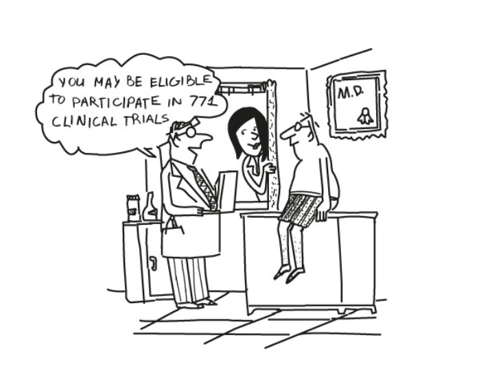
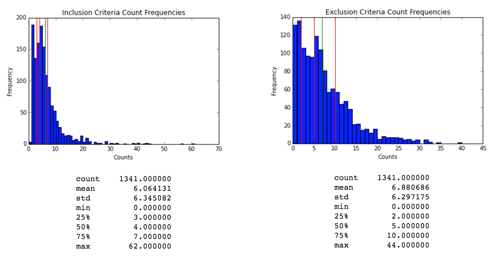
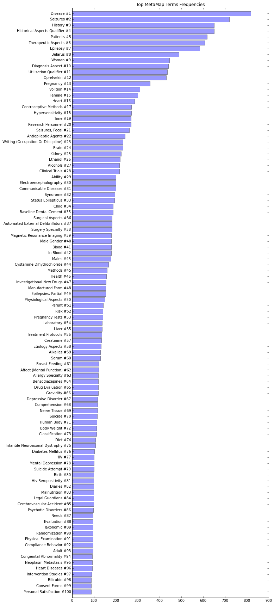
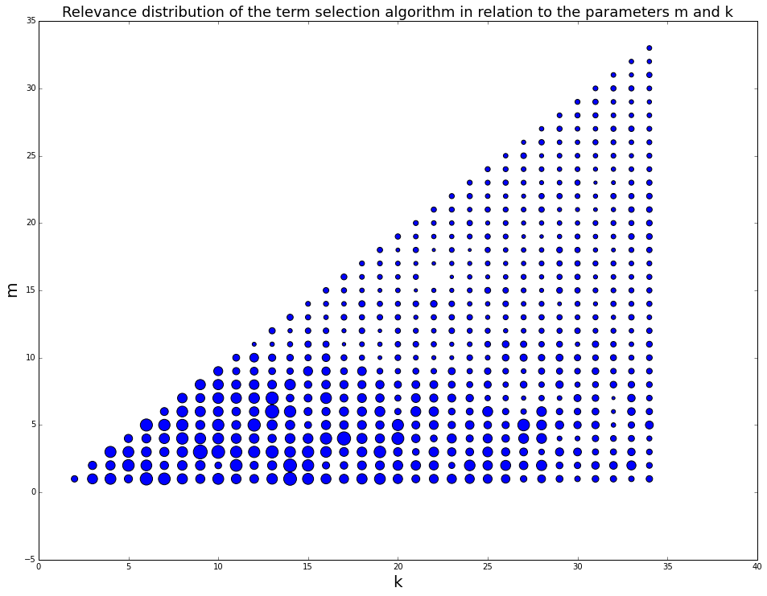

The most important factor in a clinical research study is the recruitment and retention of the subjects. Recruitment is a problem though, with studies often struggling to recruit the required number of participants. This is best illustrated by taking the period between 1997 and 2009, US based coronary artery disease studies required significant numbers of non-US patients to achieve the recruitment volumes desired, similarly, UK based studies failed to meet recruitment numbers in two thirds of trials within the timeframe (Glasser, 2014, p. 177). This is significant, studies that recruit less than the nominal amount of participants can lead to the study missing important effects or falling foul of statistical anomaly.
Understanding where these failings are materializing from starts with looking at the recruitment process itself. Glasser notes that “the biggest obstacle to patient participation is lack of awareness about clinical research studies and the role they play in the drug development process” (2014, p.178). With no national listing of trials and their recruitment process, finding trials is far more fragmented than it needs to be, relying on local doctor’s awareness of suitable studies and varying considerably by location and the information resources that are to hand. With CenterWatch suggesting 81% of trials are delayed between 1 to 6 months due to the inability to recruits the required number of participants (CenterWatch, 2014), has led to long delays in FDA approval as well.
There are several specialists aiming to solve this problem, using various elements of the media as a vehicle for recruitment. However, one of the fastest rising, and successful of these is online recruitment, one of the more successful is the Patient Research Exchange, a patient advocacy group, who not only note the rise in the use of social media for trial recruitment but champion and publicise it through their website and operations (Patient Research Exchange, 2014). They refer to the concept as crowdsourcing clinical trials, leveraging the connectivity of social media to find the necessary candidates for trials much more quickly than other methods, in part due to the sheer size of the audience they can reach. The US Government, via clinicaltrials.gov is also leveraging the online environment, creating a central database of ongoing trials throughout the world and the recruitment needs they have (U.S. National Institutes of Health, 2015). While radio and TV advertising is still carried out by these same professional recruiters and government bodies, the numbers of possible participants they can reach is substantially smaller than any online policy, especially those that leverage the power of social media.
However, these solutions are not perfect, requiring significant time input from doctors to identify trials their patients could be part of, or simply overcomplicating the process. Studies have shown that the most effective way of recruiting is through the local clinics and the doctor/patient relationship (Denhoff, et al., 2015), so the key to improving the recruitment rate for clinical trials is to ensure that awareness of suitable trials for patients is easy for doctors to acquire. Ensuring that information is available to doctors means that suitable patients in their care can be more quickly identified, but also means that candidates are informed about those trials by a familiar medical practitioner, which is also in the patient’s own interest and itself can increase the likelihood of recruitment.
For this to be at its most effective, a solution to place the relevant information into the doctor/patient meetings is required. This solution can learn from the mistakes of previous methods that are slow and overly complicated, focusing on ease of use and speed. Having a database that is easily filtered to narrow down trials based on the needs of the patient in front of the doctor means that searches can be done in real time with the patient’s involvement. This will not only provide improved understanding of the clinical trial itself but allow a much greater number of potential participants to be approached as well. This should increase recruitment as well as broaden awareness of trials amongst patients while offering a more personal entry into the clinical trial process than is otherwise achieved, alleviating a potential source of stress for patients.
After the successful completion of the Data Science course and the publication of our final project, our group was approached by the founder of a start-up company. The founder has strong business ties to the Health Care sector, both to networks of clinicians and to the pharma industry. The premise of this start-up is to facilitate the recruitment of participants for clinical trials through local clinics by the patient’s private doctors.
The founder conducted a large number of interviews with a broad selection of doctors. The data collected from those interviews showed that doctors find that the current search engines available for clinical trials produce too many results that are often not relevant to their patients and sorting through these to find suitable trials takes far too much time. In one of the interviews a doctor said:
“It is very frustrating to read through a long description of a clinical trial, only to discover after 1-2 minutes that there is an inclusion criteria that my patient does not fulfil. Remember that sometimes there are tens or even hundreds of clinical trials shown from a single search engine query.”
This was a common issue, as seen in the responses to the question “what part of the clinical trials is the most important to your search process?” The most common answer from the doctors being “inclusion and exclusion criteria.”
So the founder came up with an idea for an application that will first run a normal text based search on public datasets of clinical trials (such as clinicaltrials.gov) and then become proactive and present to the user a set of questions that will help to filter the long list of results and narrow it to a small set of trials that are highly relevant to the patient in front of the doctor. The relevancy of a clinical trial to a patient determined by the compliance of the patient to a set of inclusion and exclusion criteria.
The founder asked us to develop a prototype for an application based upon that remit. Because of the limited time available, just 2 weeks to work on the application before the founder had to show it to a group of angel investors, we agreed that in the first phase, the question that the application asks will always be the same: “Which term from the following list is the most relevant to your patient?”
The data consists of automatically downloaded publicly available clinical trials descriptions from clinicaltrials.gov. This site is a service of the U.S. National Institutes of Health that has a database of publicly and privately supported clinical studies.
To download the data we used the "results/download" endpoint from clinicaltrials.gov. This endpoint is a standard full-text search query that allows us to specify the type, format and search term of the results to download.
We choose to reduce our search to two main queries "Seizure" and "Diabetes Type 2" so we could work with a manageable amount of data on a specific topic. After the download we had more than 1,300 descriptions of clinical trials for "Seizure" and 7,290 for "Diabetes Type 2" in xml files. We processed the xml files to a dataframe which is a data science friendly tabular structure.
The first step in our analysis was to extract the inclusion and exclusion criteria. To do this we used two fields from our original dataframe. The unique identifier for the clinical trial, which is a unique alphanumerical identifier, and the eligibility criteria, wich is a natural language text block.
We processed the eligibility criteria text to extract the criteria for each row and categorize if the criteria was for inclusion or exclusion. Then we applied standard text processing techniques to tokenize, apply lemmatization and extract relevant n-grams from each criterion. For example - we removed n-grams that do not include any nouns.

We use MetaMap to extract UMLS Concepts, which are standard medical terms, from clinical trials. Unified Medical Language System (UMLS) is a collection of terms, concepts and relationships that has been designed by the National Library of Medicine (NLM) in order to facilitate the developers or computer systems to understand the meanings of medical terms, concepts and relationships. In UMLS many synonymous terms are clustered into a concept that has one preferred term. This term is then assigned a CUI (Concept Unique Identifier.) For example, the two terms: "Prostate carcinoma" and "carcinoma of prostate" have both the same CUI: C0600139. Medical data scientists often refer to UMLS Concepts as CUIs. There are several tools that extract CUIs from text, for example Apache cTAKES. In this project we have chosen MetaMap because it is relatively easy to install and use it. The terms shown in our MetaMap web app are CUIs extracted from our datasets with MetaMap. The following diagram illustrates the 100 most frequent CUIs in our "Seizure" dataset:

The requirements from the search service were clear. The input is the dataset and the user actions. The output should be two lists: one list with the most relevant terms (based on the number of terms we would like to show in the user interface.) The second list shall have the most relevant clinical trials. Even though it's not clear immediately what are "the most relevant" terms and clinical trials, some decisions were easy:
Next, we defined the requirements from algorithm that will select the terms to present to the user (from the collection of all terms that the user did not reject.)
The purpose of the algorithm is to build a list of "Most Relevant Terms" (MRT). The list is then presented to the user through the user interface and the user can select the most representative term to the query.
We defined two main properties of "Most Relevant Terms" (MRT) that the algorithm shall try to balance:
The algorithm constructs the list of N terms by iteratively:
After selecting the list of terms, the next step was to define what are the "most relevant" clinical trials that the service shall serve. We decided that documents should be relevant not only to the terms that the user already selected, but also to the list of terms that is presented to the user. We have used tf-idf vectorization with cosine similarities between the list of the terms that the user already selected together with the list of terms presented to the user and each of the clinical trials that were not removed from the context (remember that trials that do not contain a term that the user had already selected are removed from the context.)
After implementing the service, we have performed Monte Carlo simulation. In the simulation we modeled interactive search sessions and measured the performance of the service with different sets of (k,m) parameters. The score of each set of parameters was the tf-idf based cosine distance between the list of parameters that the user has selected in each simulation to the list of documents that has been presented to the user at the end of each simulation. At the end of the simulation we scattered the results on a (k,m) grid and used differential point size, so the size of the points will correlate to the score of each simulation. Using the results we set the optimal values for the parameters k and m.

Please select a term from the Word Cloud that applies to the medical condition. If no word term matches the condition click on the "Next" button. To start a new MetaMap or MedEx session click on the "MetaMap" or "MedEx" button.
The application is a responsive web page that interacts with a live deployment of the Search Server. It has a very intuitive and direct interface in which the user clicks on an interactive word cloud and immediately sees how the documents are filtered.
The web client uses html, javascript and css and it is accessible through any modern web browser. It adjusts to desktop, tablet and mobile devices. The server is deployed on a Python Flask app. It uses a Redis key/value data store to manage the data sessions.
CenterWatch, 2014. CenterWatch News Online. [Online] Available at: http://news.centerwatch.com/2014/09/10/survey-reveals-knowledge-gaps-among-parkinsons-patients-and-caregivers/ [Accessed 5 12 2015].
Denhoff, E. R. et al., 2015. Factors Associated with Clinical Research Recruitment in a Pediatric Academic Medical Center—A Web-Based Survey. PLoS One, 10(10).
Glasser, S. P., 2014. Essentials of Clinical Research. 2nd ed. London: Springer.
Patient Research Exchange, 2014. Clinical Trial Recruiting Tools in the Digital Age. [Online] Available at: https://www.patientresearchexchange.org/stories/detail/clinical-trial-recruiting-tools-in-the-digital-age [Accessed 5 12 2015].
U.S. National Institutes of Health, 2015. Clinical Trials. [Online] Available at: https://clinicaltrials.gov/ [Accessed 5 12 2015].